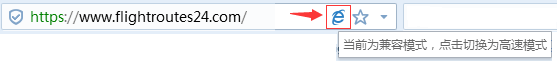

<!doctype html>
<html lang="en">
<head>
	<meta http-equiv="Content-Type" content="text/html; charset=UTF-8">
	<meta http-equiv="X-UA-Compatible" content="IE=edge,chrome=1" />
	<meta http-equiv="Expires" content="0">
	<meta http-equiv="Pragma" content="no-cache">
	<meta http-equiv="Cache-control" content="no-cache,no-store">
	<meta http-equiv="Cache" content="no-cache">
	<meta name="renderer" content="webkit"/>
	<meta name="Keywords" content="">
	<meta name="Description" content="">
	<title></title>
</head>
<body>
	<!--[if lte IE 8]>
		<style type="text/css">
			body{padding-top:0px;display:block;width:100%;height:100%;overflow:hidden;}
			.no-support-containner{width:100%;height:100%;position:absolute;z-index:500;background:#efefef;}
			.no-support-background{width: 100%;position:absolute;z-index:501;}
			.no-support-logo{margin-top: 10px;margin-left: 100px;height:48px;position:absolute;top:0px;z-index:502}
			.no-support-content{width:800px;position:absolute;z-index:503;left:50%;top:50%;margin-left:-420px;margin-top:-205px;padding: 20px;}
			.no-support-yy{width:100%;height:100%;position:absolute;z-index:-1;left:0;top:0;background:#fff;filter:alpha(opacity=20);opacity: 0.2;}
			.no-support-hint{font-size: 16px;color: #fff;line-height:34px;font-family:微软雅黑, arial, \5b8b\4f53;}
			.no-support-hint[show]{display:none;}
			.hint_content{text-indent: 30px;font-size: 14px;}
			.hint_content a{color:#fff;text-decoration:underline;}
			.switch-mode{padding-left:30px;}
			.hint_title_0{font-size:20px;}
			.hint_main{font-size:16px;}
		</style>
		<div class="no-support-containner">
			
			
			<div class="no-support-content">
				<div class="no-support-yy"></div>
				<div class="no-support-hint">
					<p class="hint_title_0">温馨提示：</p>
					<p class="hint_content hint_main">您使用的浏览器版本过低，可能有安全风险，您可以选择</p>
					<p>方法一：</p>
					<p class="hint_content">如果您当前浏览器地址栏右侧可以切换模式，请切换到极速模式继续访问，如果不能切换您可以选择方法二。</p>
					
					<p>方法二：</p>
					<p class="hint_content">选择已有的其他浏览器或下载高版本浏览器继续浏览。</p>
					<p class="hint_content"><a href="https://www.google.cn/chrome/" target="_blank">Google 浏览器</a></p>
					<p class="hint_content"><a href="https://support.microsoft.com/zh-cn/help/17621/internet-explorer-downloads" target="_blank">IE 浏览器最新版</a></p>
				</div>
			</div>
		</div>
	<![endif]-->

	<div id="app"></div>
</body>
</html>
